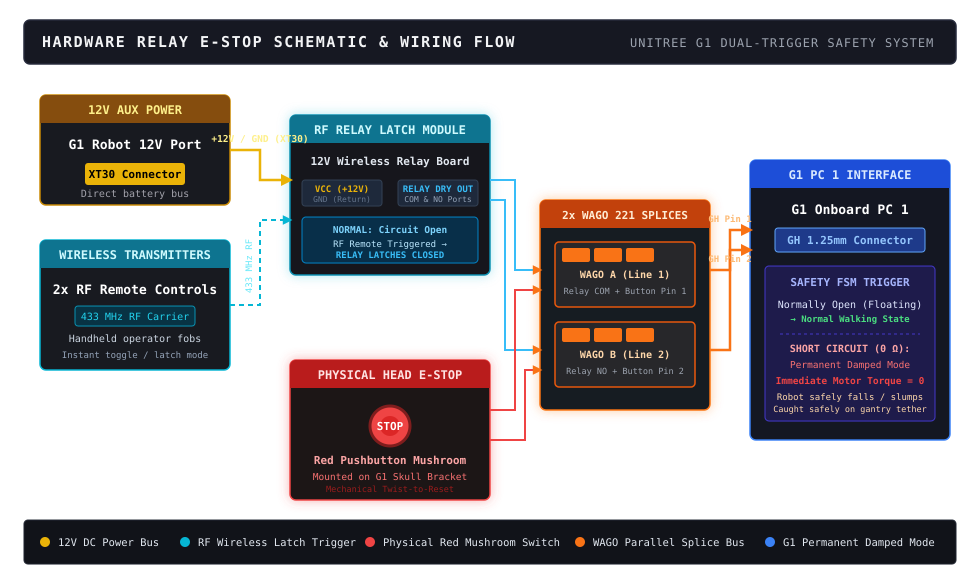
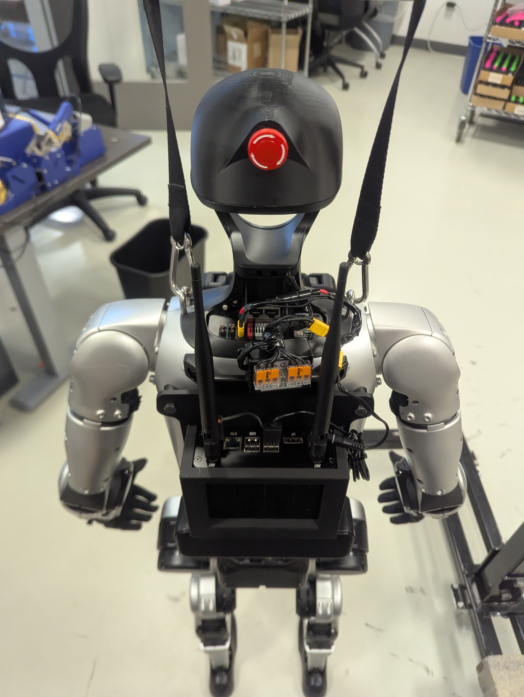
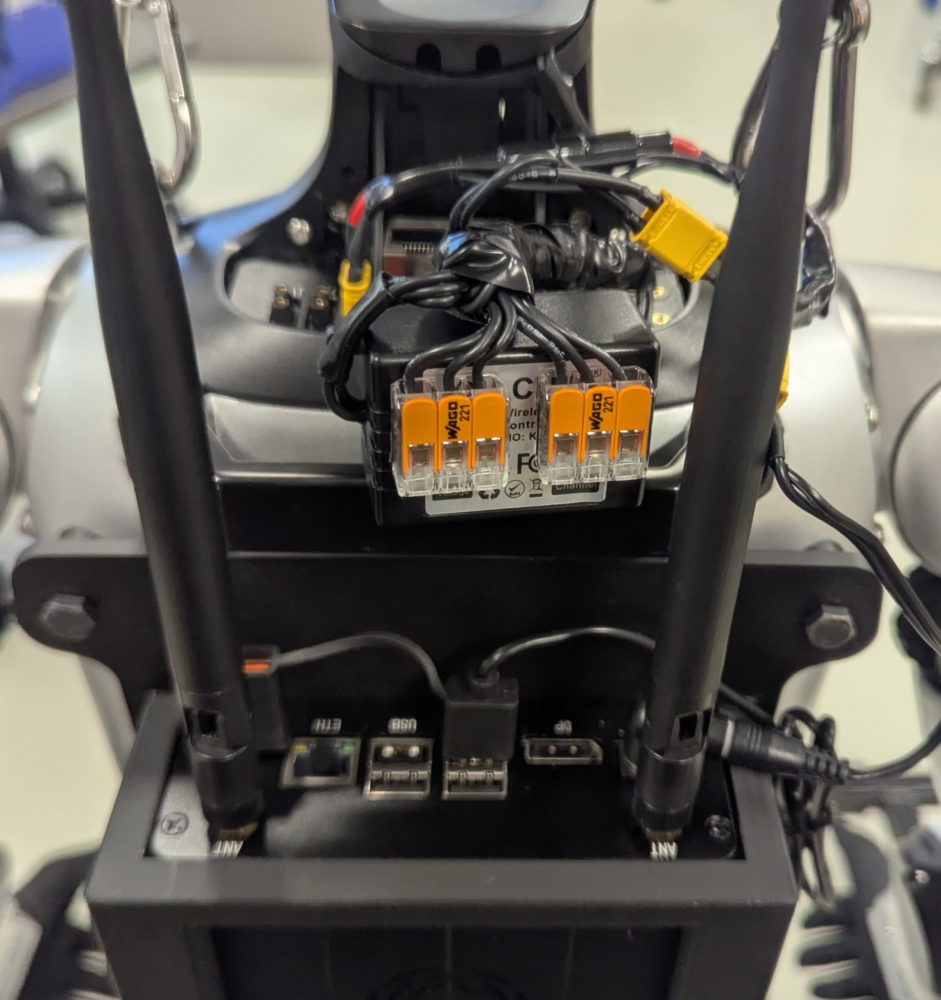

projects / unitree g1 / 6
Hardware Relay E-Stop — Dual-Trigger Safety System
An integrated hardware emergency stop safeguarding human operators and the Unitree G1 humanoid during autonomous bipedal walking trials. By paralleling an RF wireless latching relay and a physical head-mounted mushroom switch into G1 PC 1's hardware damping port, the system guarantees instantaneous zero-torque motor compliance upon any safety breach.
- Dual-trigger safety architecture combines long-range 433 MHz RF wireless remotes with a physical head mushroom switch.
- Spliced through dual WAGO 221 lever connectors directly to G1 PC 1's 2-pin GH connector.
- Hardware-level short triggers permanent damped mode within milliseconds, immediately cutting motor torque.
Safety Pendant · Live E-Stop Verification
Wireless Remote Emergency Stop — Handheld RF safety pendant executing immediate zero-torque compliant motor cutoff on walking humanoid.
01The Relay & Wiring Architecture
- 12V auxiliary power sourced directly from the robot's XT30 port to energize the RF relay receiver.
- Two WAGO 221-413 lever connectors parallel-splice the dry relay contacts and physical mushroom switch.

Safety Wiring Schematic — Orthogonal circuit schematic illustrating parallel trigger routing from 12V power to G1 PC 1.
02Physical Hardware Integration
- Custom 3D-printed skull cap encloses an industrial twist-to-reset emergency stop mushroom pushbutton.
- Dual WAGO 221 lever clips provide vibration-resistant splicing between high-gauge silicone leads and GH pins.
Physical Head Mushroom E-Stop

WAGO 221 Lever Splice Wiring

Physical Hardware Integration — Head-mounted industrial mushroom button and WAGO 221 splice junction anchored to G1 chassis.
safety_port.h — hardware damping pin definition
#define G1_ESTOP_PIN_STATE() (gpio_read(PIN_PC1_GH_ESTOP) == 0)
// LOW (0V / shorted) -> transition FSM to PERMANENT_DAMPED_MODE03Fail-Safe Damping Logic
- Zero-torque compliant damping eliminates violent kickback while tether prevents floor collision.
- Redundant dual remotes allow independent safety observers stationed on opposite sides of the gantry.
- trigger latency< 15 ms mechanical relay contact closure
- RF frequency433.92 MHz with dual handheld transmitter fobs
- power source12 V DC auxiliary bus via yellow XT30 connector
- FSM statePermanent Damped Mode — zero torque on all 29 joints
- splicing2× WAGO 221-413 inline 3-conductor lever connectors